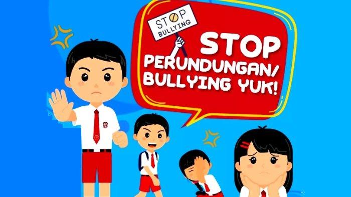

Kenakalan Remaja bullying

Definisi
Bully adalah tindakan agresif yang dilakukan secara sengaja oleh seseorang atau kelompok untuk menyakiti, mengintimidasi, atau merendahkan orang lain, baik secara fisik, verbal, emosional, maupun sosial. Biasanya, tindakan ini terjadi berulang kali, dengan pelaku memanfaatkan ketidakseimbangan kekuatan atau kekuasaan, seperti fisik, status sosial, atau pengaruh, untuk mendominasi korban. Contohnya termasuk mengejek, menyebarkan rumor, mengucilkan, atau bahkan melakukan kekerasan fisik.
Dampak / Akibat
Temuan ini menunjukkan bahwa perilaku bully menyebabkan bebreapa dampak buruk bagi korban, seperti:
- Menurunnya rasa percaya diri
- Kesulitan dalam membangun hubungan sosial
- Penurunan kemampuan berkomunikasi atau kepercayaan kepada orang lain
- Keengganan untuk pergi kesekolah atau putus sekolah
Tindakan Pencegahan
- Sosialisasi program pencegahan pembullyan
- Berani menghentikan dan melawan pembullyan
- Membantu pelaku untuk menghentikan perilaku buruknya
- Memberikan dukungan pada korban
- Membuat peraturan yang tegas untuk perilaku bullying